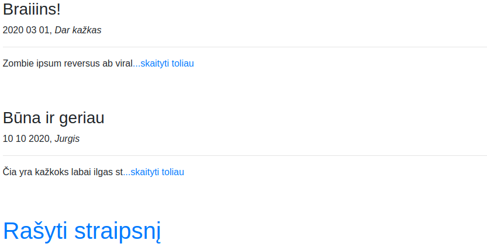

CodeAcademy Flask
Table of Contents
- 1. Įžanga į Flask
- 1.1. Kaip sukurti minimalią svetainę:
- 1.2. Kaip puslapyje atvaizduoti įvestą kintamąjį:
- 1.3. Kaip sukurti ir panaudoti HTML šabloną:
- 1.4. Kaip kintamuosius perkelti į šabloną:
- 1.5. Kaip perduoti duomenis iš svetainės į programą:
- 1.6. Naudojame base.html šabloną:
- 1.7. Stiliui panaudojame "Bootstrap":
- 1.8. Užduotys
- 2. Flask 1 dalis
- 3. Flask 2 dalis
- 4. Flask 3 dalis
- 5. Flask 4 dalis
1. Įžanga į Flask
Flask yra populiariausias Python microframework. Jeigu projektas nėra labai didelis, arba tiesiog norime pasidaryti kažkokį GUI per naršyklę, kažką greitai prototipuoti, Flask yra labai geras pasirinkimas. Su flask yra pakankamai paprasta kurti API's. Ši paskaita bus greita įžanga, kitose nagrinėsime išsamiau.
Flask galima įdiegti su pip naudojant pip install flask.
1.1. Kaip sukurti minimalią svetainę:
from flask import Flask app = Flask(__name__) @app.route("/") def home(): return "<h1>Čia mano naujas puslapis</h1>" if __name__ == "__main__": app.run(debug=True):
1.2. Kaip puslapyje atvaizduoti įvestą kintamąjį:
from flask import Flask app = Flask(__name__) @app.route("/<name>") def user(name): return f"Labas, {name}" if __name__ == "__main__": app.run()
1.3. Kaip sukurti ir panaudoti HTML šabloną:
main.py:
from flask import Flask, render_template app = Flask(__name__) @app.route("/") def user(): return render_template("index.html") if __name__ == "__main__": app.run()
templates/index.html:
<!DOCTYPE html> <html lang="en"> <head> <meta charset="UTF-8"> <title>Mano Puslapis</title> </head> <body> <h1>Labas, pasauli!</h1> </body> </html>
Įdėkime į šabloną šiek tiek logikos:
<!DOCTYPE html> <html lang="en"> <head> <meta charset="UTF-8"> <title>Skaičiavimai</title> </head> <body> <h1>Skaičiavimai: </h1> {%for x in range(10)%} {%if x % 2 == 0 %} <p>{{x}}</p> {% endif %} {%endfor%} </body> </html>
1.4. Kaip kintamuosius perkelti į šabloną:
main.py
from flask import Flask, render_template app = Flask(__name__) @app.route("/") def home(): vardai = ['Jonas', 'Antanas', 'Petras'] return render_template("index.html", sarasas=vardai) if __name__ == "__main__": app.run()
templates/index.html
<!DOCTYPE html> <html lang="en"> <head> <meta charset="UTF-8"> <title>Sarašas</title> </head> <body> <h1>Žmonių sarašas: </h1> {%for vardas in sarasas%} <p>{{vardas}}</p> {% endfor %} </body> </html>
1.5. Kaip perduoti duomenis iš svetainės į programą:
main.py
from flask import Flask, request, render_template app = Flask(__name__) @app.route("/login", methods=['GET', 'POST']) def login(): if request.method == "POST": vardas = request.form['vardas'] return render_template("greetings.html", vardas=vardas) else: return render_template("login.html") if __name__ == "__main__": app.run()
templates/index.html
<!DOCTYPE html> <html lang="en"> <head> <meta charset="UTF-8"> <title>Prisijungimas</title> </head> <body> <form action="#" method="post"> <p>Vardas:</p> <p><input type="text" name="vardas"/></p> <p><input type="submit" value="submit"/></p> </form> </body> </html>
templates/greetings.html
<!DOCTYPE html> <html lang="en"> <head> <meta charset="UTF-8"> <title>Sveikiname</title> </head> <body> <h1>{{vardas}}, sveikiname prisijungus!</h1> </body> </html>
1.6. Naudojame base.html šabloną:
Failas templates/base.html:
<!DOCTYPE html> <html lang="en"> <head> <title>Mano puslapis</title> </head> <body> <div> <h1>Sveiki,</h1> <p>Čia yra mano super puslapis!</p> </div> <div class="container"> {% block content %}{% endblock %} </div> <body> </html>
Failas templates/login.html:
{% extends "base.html" %}
{% block content %}
<form action="#" method="post">
<p>Vardas:</p>
<p><input type="text" name="vardas"/></p>
<p><input type="submit" value="submit"/></p>
</form>
{% endblock %}
Failas templates/greetings.html:
{% extends "base.html" %}
{% block content %}
<h1>{{vardas}}, sveikiname prisijungus!</h1>
{% endblock %}
1.7. Stiliui panaudojame "Bootstrap":
Faile base.html:
<!DOCTYPE html> <html lang="en"> <head> <title>Mano puslapis</title> <meta charset="utf-8"> <meta name="viewport" content="width=device-width, initial-scale=1"> <link rel="stylesheet" href="https://maxcdn.bootstrapcdn.com/bootstrap/4.5.0/css/bootstrap.min.css"> <script src="https://ajax.googleapis.com/ajax/libs/jquery/3.5.1/jquery.min.js"></script> <script src="https://cdnjs.cloudflare.com/ajax/libs/popper.js/1.16.0/umd/popper.min.js"></script> <script src="https://maxcdn.bootstrapcdn.com/bootstrap/4.5.0/js/bootstrap.min.js"></script> </head> <body> <!-- Navigation --> <nav class="navbar navbar-expand-lg navbar-light bg-light static-top mb-5 shadow"> <div class="container"> <a class="navbar-brand" href="#"> Mano puslapis</a> <button class="navbar-toggler" type="button" data-toggle="collapse" data-target="#navbarResponsive" aria-controls="navbarResponsive" aria-expanded="false" aria-label="Toggle navigation"> <span class="navbar-toggler-icon"></span> </button> <div class="collapse navbar-collapse" id="navbarResponsive"> <ul class="navbar-nav ml-auto"> <li class="nav-item"> <a class="nav-link" href="/login">Prisijungti</a> </li> </ul> </div> </div> </nav> <div class="jumbotron text-center"> <h1>Sveiki,</h1> <p>Čia yra mano super puslapis!</p> </div> <div class="container"> {% block content %}{% endblock %} </div> </body> </html>
1.8. Užduotys
1.8.1. 1 užduotis
Sukurti programą, kuri turėtų statinį puslapį, pvz. localhost:5000 su norimu tekstu (rekomenduojama naudoti šablonus)
main.py
from flask import Flask, render_template app = Flask(__name__) @app.route("/") def home(): return render_template("home.html") if __name__ == "__main__": app.run(debug=True)
template/home.html
<!DOCTYPE html> <html lang="en"> <head> <meta charset="UTF-8"> <title>Labas</title> </head> <body> <h1>Norimas tekstas</h1> </body> </html>

1.8.2. 2 užduotis
Sukurti programą, kuri įvedus norimą žodį adreso eilutėje (po / simbolio) ir paspaudus ENTER, atspausdintų jį penkis kartus.
Still not sure where this is useful.
main.py
from flask import Flask, render_template app = Flask(__name__) @app.route("/<word>") def word(word): return render_template("word.html", word = word) if __name__ == "__main__": app.run(debug=True)
templates/word.html
<!DOCTYPE html> <html lang="en"> <head> <meta charset="UTF-8"> <title>Žodžiai</title> </head> <body> {% for x in range(5) %} {{word}} {% endfor %} </body> </html>

1.8.3. 3 užduotis
Sukurti programą, kuri puslapyje localhost:5000/keliamieji parodytų visus keliamuosius metus nuo 1900 iki 2100 metų.
Cool use of calendar.
main.py
from flask import Flask, render_template import calendar app = Flask(__name__) @app.route("/keliamieji") def leap(): return render_template("leap.html", calendar = calendar) if __name__ == "__main__": app.run(debug=True)
templates/leap.html
<!DOCTYPE html> <html lang="en"> <head> <meta charset="UTF-8"> <title>Leap</title> </head> <body> {% for year in range(1900, 2100) %} {% if calendar.isleap(year) %} {{year}} {% endif %} {% endfor %} </body> </html>

1.8.4. 4 užduotis
Sukurti programą, kuri leistų įvesti metus ir paspaudus patvirtinimo mygtuką parodytų, ar jie yra keliamieji.
main.py
from flask import Flask, render_template, request import calendar app = Flask(__name__) @app.route("/") def home(): return "<h1>Labas, cia yra pradinis</h1><p>Paziurek kas slepiasi po http://localhost:5000/arkeliamieji</p>" @app.route("/arkeliamieji", methods=["GET", "POST"]) def isleap(): if request.method == "GET": return render_template("getyear.html") elif request.method == "POST": year = request.form["year"] return render_template("isleap.html", year=int(year), calendar=calendar) if __name__ == "__main__": app.run(debug=True)
templates/getyear.html
<!DOCTYPE html> <html lang="en"> <head> <meta charset="UTF-8"> <title>Get Year</title> </head> <body> <form action="#" method="post"> <p>Metai:</p> <p><input type="text" name="year"/></p> <p><input type="submit" value="Patikrinti"/></p> </form> </body> </html>
templates/isleap.html
<!DOCTYPE html> <html lang="en"> <head> <meta charset="UTF-8"> <title>Is Leap</title> </head> <body> {% if calendar.isleap(year) %} <p>Keliamieji</p> {% else %} <p>Nekeliamieji</p> {% endif %} </body> </html>
1.8.5. 5 užduotis (papildomai)
Patobulinti anksčiau kurtą biudžeto programą, panaudojant Flask (bendravimui su vartotoju) ir SQLAlchemy (darbui su duomenų baze, kurioje bus saugomi pajamų ir išlaidų įrašai).
Run db.py file first to create a database:
db.py
import datetime import os from sqlalchemy import Column, Integer, String, Float, DateTime, create_engine from sqlalchemy.ext.declarative import declarative_base engine = create_engine("sqlite:///.db") Base = declarative_base() class Projektas(Base): __tablename__ = "Projektas" id = Column(Integer, primary_key=True) name = Column("Pavadinimas", String) price = Column("Kaina", Float) created_date = Column("Sukūrimo data", DateTime, default=datetime.datetime.utcnow) # aprasom taip pat kaip paprasta klase. Asocijuojam su klase. Kad zinotu i kuri collumn deti kintamaji # created_date matai neidetas apacioje, nes nereikia jo mum patiem irasyti, jis turi default reiksme # jeigu noretum irasyti ir keisti - tuomet prie init turetum prirasyti def __init__(self, name, price): self.name = name self.price = price # Kada kvieciam klase su query, kad ja israsytu ir KAIP israsytu apibudinam cia def __repr__(self): return f"{self.id} {self.name} - {self.price}: {self.created_date}" # kviecia connectiona ir sukuria visas lenteles jeigu jos neegzistuoja. Jos neupdeitins. Base.metadata.create_all(engine)
main.py
import os from flask import Flask, request, render_template, url_for, redirect from flask_sqlalchemy import SQLAlchemy if __name__ == "__main__": from models.irasas import Irasas basedir = os.path.abspath(os.path.dirname(__file__)) app = Flask(__name__) app.config["SQLALCHEMY_DATABASE_URI"] = "sqlite:///" + os.path.join(basedir, "biudzetas.db") app.config["SQLALCHEMY_TRACK_MODIFICATIONS"] = False db = SQLAlchemy(app) db.create_all() @app.route("/prideti", methods=["GET", "POST"]) def prideti(): if request.method == "POST": suma = request.form["suma"] info = request.form["info"] irasas = Irasas(suma, info) db.session.add(irasas) db.session.commit() return sarasas() elif request.method == "GET": return render_template("prideti.html") @app.route("/") def sarasas(): biudzetas = Irasas.query.all() return render_template("sarasas.html", biudzetas=biudzetas) @app.route("/balansas") def balansas(): biudzetas = db.session.query(Irasas).all() balansas = 0 for irasas in biudzetas: balansas += irasas.suma return render_template("balansas.html", balansas=balansas) @app.route("/irasas_delete/<int:id>") def irasas_delete(id): uzklausa = db.session.query(Irasas).get(id) db.session.delete(uzklausa) db.session.commit() return redirect(url_for("sarasas")) @app.route("/irasas_update/<int:id>", methods=["GET", "POST"]) def irasas_update(id): if request.method == "POST": irasas = db.session.query(Irasas).get(id) irasas.suma = request.form["suma"] irasas.info = request.form["info"] db.session.commit() return redirect(url_for("sarasas")) elif request.method == "GET": irasas = db.session.query(Irasas).get(id) return render_template("redaguoti.html", irasas=irasas) if __name__ == "__main__": app.run(debug=True)
models/irasas.py
from main import db class Irasas(db.Model): __tablename__ = "Irasas" id = db.Column(db.Integer, primary_key=True) suma = db.Column("Suma", db.Float) info = db.Column("Info", db.String(120)) def __init__(self, suma, info): self.suma = suma self.info = info def __repr__(self): return f"{self.id}: suma - {self.suma}, info - {self.info}" db.create_all()
templates/balansas.html
{% extends "base.html" %}
{% block content %}
<h1>Balansas: </h1>
<p>{{balansas}}</p>
{% endblock %}
templates/prideti.html
{% extends "base.html" %}
{% block content %}
<form action="#" method="post">
<p>Suma:</p>
<p><input type="text" name="suma"/></p>
<p>Info:</p>
<p><input type="text" name="info"/></p>
<p><input type="submit" value="Įvesti"/></p>
</form>
{% endblock %}
templates/redaguoti.html
{% extends "base.html" %}
{% block content %}
<form action="#" method="post">
<p>Suma:</p>
<p><input type="text" name="suma" value={{irasas.suma}} /></p>
<p>Info:</p>
<p><input type="text" name="info" value={{irasas.info}} /></p>
<p><input type="submit" value="Įvesti"/></p>
</form>
{% endblock %}>
templates/sarasas.html
{% extends "base.html" %}
{% block content %}
<h1>Biudžeto įrašai: </h1>
{%for irasas in biudzetas%}
<p>{{irasas}}</p>
<a href="{{ url_for('irasas_delete', id=irasas['id']) }}">Ištrinti</a>
<a href="{{ url_for('irasas_update', id=irasas['id']) }}">Redaguoti</a>
<hr>
{% endfor %}
{% endblock %}
templates/base.html
<!DOCTYPE html> <html lang="en"> <head> <title>Mano biudžetas</title> <meta charset="utf-8"> <meta name="viewport" content="width=device-width, initial-scale=1"> <link rel="stylesheet" href="https://maxcdn.bootstrapcdn.com/bootstrap/4.5.0/css/bootstrap.min.css"> <script src="https://ajax.googleapis.com/ajax/libs/jquery/3.5.1/jquery.min.js"></script> <script src="https://cdnjs.cloudflare.com/ajax/libs/popper.js/1.16.0/umd/popper.min.js"></script> <script src="https://maxcdn.bootstrapcdn.com/bootstrap/4.5.0/js/bootstrap.min.js"></script> </head> <body> <!-- Navigation --> <nav class="navbar navbar-expand-lg navbar-light bg-light static-top mb-5 shadow"> <div class="container"> <a class="navbar-brand" href="#"> <svg width="1em" height="1em" viewBox="0 0 16 16" class="bi bi-cash" fill="currentColor" xmlns="http://www.w3.org/2000/svg"> <path fill-rule="evenodd" d="M15 4H1v8h14V4zM1 3a1 1 0 0 0-1 1v8a1 1 0 0 0 1 1h14a1 1 0 0 0 1-1V4a1 1 0 0 0-1-1H1z"/> <path d="M13 4a2 2 0 0 0 2 2V4h-2zM3 4a2 2 0 0 1-2 2V4h2zm10 8a2 2 0 0 1 2-2v2h-2zM3 12a2 2 0 0 0-2-2v2h2zm7-4a2 2 0 1 1-4 0 2 2 0 0 1 4 0z"/> </svg> Mano biudžetas</a> <button class="navbar-toggler" type="button" data-toggle="collapse" data-target="#navbarResponsive" aria-controls="navbarResponsive" aria-expanded="false" aria-label="Toggle navigation"> <span class="navbar-toggler-icon"></span> </button> <div class="collapse navbar-collapse" id="navbarResponsive"> <ul class="navbar-nav ml-auto"> <li class="nav-item"> <a class="nav-link" href="/">Sąrašas</a> </li> <li class="nav-item"> <a class="nav-link" href="/balansas">Balansas</a> </li> <li class="nav-item"> <a class="nav-link" href="/prideti">Pridėti</a> </li> </ul> </div> </div> </nav> <div class="container"> {% block content %}{% endblock %} </div> </body> </html>
Run main.py and open http://127.0.0.1:5000, see the magic :)

Important notes!!
Jeigu norite paleistį šį projektą savo kompiuteryje, prieš tai įsitikinkite, jog turite šiam projektui reikiamą flask_sqlalchemy v2.5.1 versiją.
Tai galite padaryti savo virtualioje, šiam projektui skirtoje python aplinkoje. Terminale tiesiog paleiskite šią komandą, kad įrašyti reikiamą flask-sqlalchemy versiją:
pip install flask-sqlalchemy==2.5.1
Arba galite pasinaudoti requirements.txt. failiuku ir vos tik parsisiuntus šį branch į savo kompiuterį ir pasiruošus virtualią aplinką, susirašyti visas šiam projektui būtinas "dependencies" su šia komanda:
pip install -r requirements.txt
requirements.txt
click==8.1.3 Flask==2.2.2 Flask-SQLAlchemy==2.5.1 greenlet==2.0.1 importlib-metadata==6.0.0 itsdangerous==2.1.2 Jinja2==3.1.2 MarkupSafe==2.1.2 SQLAlchemy==1.4.46 Werkzeug==2.2.2 zipp==3.11.0
2. Flask 1 dalis
2.1. Susikurkime paprastą flask aplikaciją
app.py:
from flask import Flask, render_template # iš flask bibliotekos importuojame klasę Flask ir f-ją render_template. app = Flask(__name__) # inicijuojame klasės Flask objektą, priskiriame kintamąjam app. @app.route('/') # įvelkame f-ją į flask dekoratorių. Be jo funkcija būtų bereikšmė. Dekorato riaus parametruose nurodome, kad norėsime rezultato 127.0.0.1:8000/ url adrese.""" def index(): return render_template('index.html') # funkcijoje index nurodome, kad norėsime sugeneruoti index.html if __name__ == '__main__': app.run(host='127.0.0.1', port=8000, debug=True) # patikrinę, ar programa leidžiama ne iš kito failo, leidžiame mūsų app, su parametrais. debug = True klaidos atveju mums rodys informatyvias žinutes naršyklėje.
Komentaruose šiek tiek informacijos, kas vyksta. Dabar mums reikės susikurti html šabloną. Flask šablonų ieško templates kataloge. :
<!DOCTYPE html> <html lang="en"> <head> <meta charset="UTF-8"> <meta name="viewport" content="width=device-width, initial-scale=1.0"> <meta http-equiv="X-UA-Compatible" content="ie=edge"> <title>Demo</title> </head> <body> <h1>Flask Flask Flask</h1> </body> </html>
Patikrinkime, ar veikia:

Logikos naudojimas šablonuose:
Už logiką šablonuose atsako Jinja2 šablonų generatorius (templating engine), jis per savo sintaksę leidžia mums įterpti kintamuosius ir logiką į html failus.
paruoškime paprastą žodynų sąrašą, kuris galės būti mūsų duomenų bazės imitacija:
dictionary.py:
data =[{ 'data':'2020 01 01', 'autorius': 'Autorius 1', 'pavadinimas': 'Apie nieką', 'tekstas': 'Zombie ipsum reversus ab viral inferno, nam rick grimes malum cerebro. De carne lumbering animata corpora quaeritis. Summus brains sit, morbo vel maleficia? De apocalypsi gorger omero undead survivor dictum mauris.' }, { 'data':'2020 02 01', 'autorius': 'KITAS AUTORIUS', 'pavadinimas': 'Apie zombius', 'tekstas': 'Zombie ipsum reversus ab viral inferno, nam rick grimes malum cerebro. De carne lumbering animata corpora quaeritis. Summus brains sit, morbo vel maleficia? De apocalypsi gorger omero undead survivor dictum mauris. ' }, { 'data':'2020 03 01', 'autorius': 'Dar kažkas', 'pavadinimas': 'Braiiins!', 'tekstas': 'Zombie ipsum reversus ab viral inferno, nam rick grimes malum cerebro. De carne lumbering animata corpora quaeritis. Summus brains sit, morbo vel maleficia? De apocalypsi gorger omero undead survivor dictum mauris.' }]
Pagrindiniame faile importuokime šį kintamąjį ir perduokime į šabloną:
app.py:
from flask import Flask, render_template from dictionary import data # IMPORTUOJAME app = Flask(__name__) @app.route('/') def index(): return render_template('index.html', data=data) # PERDUODAME Į ŠABLONĄ if __name__ == '__main__': app.run(host='127.0.0.1', port=8000, debug=True)
Dabar dirbsime su šablonu. Pradžiai tiesiog perduokime kintamąjį į body:
<body> <h1>Straipsniai:</h1> {{ data }} </body>

Čia yra grubus žodynų sąrašo perdavimas, jį ir matome. Pabandykime tai paversti straipsnių puslapiu:
<body> <h1>Straipsniai</h1> <br><br> {% for straipsnis in data %} <h3>{{ straipsnis['pavadinimas'] }}</h3> <p>{{ straipsnis['data'] }}, {{ straipsnis['autorius'] }}</p> <hr> <p>{{ straipsnis['tekstas'] }}</p> <hr> {% endfor %} </body>

Matome, kaip galime iteruoti per duomenis html'e. Pamėginkime įtraukti if logiką. Pradžiai papildykime 'duomenų bazę'. Kiekviename žodyne įtraukime 'status'. Dalies statusas bus 'published', dalies 'unpublished':
{ 'data':'2020 01 01', 'autorius': 'Autorius 1', 'pavadinimas': 'Apie nieką', 'tekstas': 'Zombie ipsum reversus ab viral inferno, nam rick grimes malum cerebro. De carne lumbering animata corpora quaeritis. Summus brains sit, morbo vel maleficia? De apocalypsi gorger omero undead survivor dictum mauris.', 'status': 'published' }, # ir t.t.
įtraukime if logiką į šabloną:
<body> <h1>Straipsniai</h1> <br> {% for straipsnis in data %} {% if straipsnis['status'] == 'published' %} <h3>{{ straipsnis['pavadinimas'] }}</h3> <p>{{ straipsnis['data'] }}, <i>{{ straipsnis['autorius'] }}</i></p> <hr> <p>{{ straipsnis['tekstas'] }}</p> <br><br> {% endif %} {% endfor %} </body>
Matome, kad straipsnis su statusu != 'published' nebuvo publikuotas. Kaip ir python'e, galima naudoti {%elif %} ir {% else %}. Pvz.:
<body> <h1>Straipsniai</h1> <br> {% for straipsnis in data %} {% if straipsnis['status'] == 'published' %} <h3>{{ straipsnis['pavadinimas'] }}</h3> <p>{{ straipsnis['data'] }}, <i>{{ straipsnis['autorius'] }}</i></p> <hr> <p>{{ straipsnis['tekstas'] }}</p> <br><br> {% else %} <h3>{{ straipsnis['pavadinimas'] }} - <i>Publikavimas laikinai išjungtas</i></h3> <br><br> {% endif %} {% endfor %} </body>

Paveldėjimas šablonuose
Dažniausiai interneto svetainės turi struktūrą, kai kiekviename puslapyje atsikartoja tam tikri komponentai. Tai gali būti titulinė puslapio dalis, <head> komponentai, navigacijos panelė, footer'is, nuorodos į CSS, JavaScript ir pan. Jinja2 turi mechanizmą, leidžiantį mums kiekvieną kartą nerašyti į šabloną šių komponentų, t.y. išsaugoti juos atskirai ir naudoti tik nuorodas į juos. Pabandykime pritaikyti praktikoje.
Pasiskolinkime standartinį išdėstymą iš čia.
Tam, kad veiktų mobiliosios versijos navigacija, data-toggle ir data-target reikia pakeisti data-bs-toggle ir data-bs-target.
Nusikopijuokime nuorodos HTML'ą į kokį nors html failą.
Pakeiskime lokalias css ir JavaScript nuorodas į Bootstrap CDN
Perkelkime savo <body> dalį vietoje tos dalies, kuri yra po komentaru <!– Page Content –>
senąjį failą pervadinkime backup.html, naująjį - index html.
Rezultatas atrodys maždaug taip:
Įsivaizduokime, kad mums reikės dar puslapio 'apie', galbūt dar keleto puslapių ateityje. Visi jie turės tą patį bootstrap'ą, ir tą pačią navigacijos panelę.
templates kataloge susikurkime failą base.html
visą turinį iš index.html nukopijuokime į naują base.html.
tuomet viską kas yra <div class="container"> viduje, triname ir pakeičiame į {% block content %}{% endblock %}:
</ul> </div> </div> </nav> <!-- Page Content --> <body> <div class="container"> {% block content %} {% endblock %} </div> </body> <!-- Bootstrap core JavaScript --> <script src="https://code.jquery.com/jquery-3.3.1.slim.min.js" integrity="sha384-q8i/X+965DzO0rT7abK41JStQIAqVgRVzpbzo5smXKp4YfRvH+8abtTE1Pi6jizo" crossorigin="anonymous"></script>
Išsaugokime base.html.
index.html pertvarkykime taip:
{% extends "base.html" %}
{% block content %}
<h1>Straipsniai</h1>
<br>
{% for straipsnis in data %}
{% if straipsnis['status'] == 'published' %}
<h3>{{ straipsnis['pavadinimas'] }}</h3>
<p>{{ straipsnis['data'] }}, <i>{{ straipsnis['autorius'] }}</i></p>
<hr>
<p>{{ straipsnis['tekstas'] }}</p>
<br><br>
{% else %}
<h3>{{ straipsnis['pavadinimas'] }} - <i>Publikavimas laikinai išjungtas</i></h3>
<br><br>
{% endif %}
{% endfor %}
{% endblock %}
papildykime savo app.py nauju maršrutu:
@app.route('/about') def about(): return render_template('about.html')
base.html susiraskime navigacijoje nuorodą 'About', ir nukreipkime į savo naująjį maršrutą:
<li class="nav-item"> <a class="nav-link" href="/about">About</a> </li> susikurkime dar vieną šabloną, about.html: {% extends "base.html" %} {% block content %} <h1>Apie</h1> <p>Šiame puslapyje rasite labai daug naudingos informacijos apie beveik viską</p> {% endblock %}
Svetainėje, paspaudę nuorodą atsidursime puslapyje "Apie":

3. Flask 2 dalis
3.1. Dinaminiai maršrutai ir formos
3.1.1. Dinaminiai maršrutai
Tęskime su praeitos paskaitos medžiaga. Įsivaizduokime, kad mums reikės straipsnių sąrašo, su dalimi teksto, ir po kiekvienu sąrašo elementu nuorodos 'skaityti toliau…'. Tokiose situacijose labai praverčia dinaminiai maršrutai. Susikurkime naują maršrutą app.py:
@app.route('/<string:title>') # parametruose nurodomas kintamasis (title) ir jo tipas (string) def article(title): # kintam1jį būtinai nurodykite ir funkcijos parametruose return render_template('article.html', title=title, data=data) # taip pat ir čia reikia jį perduoti
dabar pakoreguokime mūsų index.html:
{% extends "base.html" %}
{% block content %}
<h1>Straipsniai</h1>
<br>
{% for straipsnis in data %}
<h3>{{ straipsnis['pavadinimas'] }}</h3>
<p>{{ straipsnis['data'] }}, <i>{{ straipsnis['autorius'] }}</i></p>
<hr>
<p>{{ straipsnis['tekstas'][:30] }}<a href="{{ url_for('article', title=straipsnis['pavadinimas']) }}">...skaityti toliau</a></p>
<br><br>
{% endfor %}
{% endblock %}
panagrinėkime <p> bloką.
- {{ straipsnis['tekstas'][:30] }} - vietoje pilno teksto pasiliekame ištrauką pirmų 30ties simbolių
- nuorodoje naudojama url_for() yra pagalbinė Jinja funkcija. Į parametrus priima maršruto funkcijos pavadinimą. Paprastesniu atveju, url_for('about') nukreiptų į mūsų 'Apie' puslapį.
- {{ url_for('article', title=straipsnis['pavadinimas']) }} - šiuo atveju mes nurodėme, kad norime į 'article' ir kad jo parametruose esantis title būtų prilygintas straipsnio pavadinimui.
Mūsų straipsnių puslapis dabar atrodo taip:

Susikurkime tuščią article.html ir pažiūrėkime, kas vyksta:
article.html tuščias, todėl nėra jokio turinio. Tačiau URL eilutėje matome, kad puslaio endpoint'as yra straipsnio pavadinimas. Padarykime taip, kad matytumėm straipsnio turinį
article.html:
{% extends "base.html" %} {% block content %} {% for straipsnis in data %} {% if straipsnis['pavadinimas'] == title %} <h1>{{ straipsnis['pavadinimas'] }}</h1> <p>{{ straipsnis['data'] }}, <i>{{ straipsnis['autorius'] }}</i></p> <hr> <p>{{ straipsnis['tekstas'] }}</p> <br><br> {% endif %} {% endfor %} {% endblock %}
išbandykime:
3.1.2. Formos
Formas flaske galima kurti dviem būdais. Aptarsime abu. Pirmas iš jų būtų paprastos formos iš HTML duomenų surinkimas. Tinka įvairiems testavimams, ne kritiniams duomenims apdoroti. Veikimo principas buvo glaustai pademonstruotas įžangos skyriuje. Žinoma, tas formas galima privesti iki profesionalaus lygmens, tačiau reikės nemažai papildomo darbo.
sukurkime naują maršrutą:
@app.route('/add_article') def add_article(): return render_template('add_article.html')
papildykime index.html nuoroda po straipsniais "Rašyti straipsnį"
{% extends "base.html" %}
{% block content %}
<h1>Straipsniai</h1>
<br>
{% for straipsnis in data %}
<h3>{{ straipsnis['pavadinimas'] }}</h3>
<p>{{ straipsnis['data'] }}, <i>{{ straipsnis['autorius'] }}</i></p>
<hr>
<p>{{ straipsnis['tekstas'][:30] }}<a href="{{ url_for('article', title=straipsnis['pavadinimas']) }}">...skaityti toliau</a></p>
<br><br>
{% endfor %}
<h1><a href="{{ url_for('add_article') }}"> Rašyti straipsnį</a></h1>
{% endblock %}
sukurkime naują šabloną add_article.html:
{% extends "base.html" %}
{% block content %}
<form action="/", method="post">
<div class="form-group">
<label for="autorius">Autorius</label>
<input type="text" class="form-control" id="autorius" name="autorius">
</div>
<div class="form-group">
<label for="pavadinimas">Pavadinimas</label>
<input type="text" class="form-control" id="pavadinimas" name="pavadinimas">
</div>
<div class="form-group">
<label for="date">Data</label>
<input type="text" class="form-control" id="date" name="date">
</div>
<div class="form-group">
<label for="tekstas">Example textarea</label>
<textarea class="form-control" id="tekstas" name="tekstas" rows="3"></textarea>
</div>
<button type="submit" class="btn btn-primary">Išsaugoti</button>
</form>
{% endblock %}
užeikime į "Rašyti straipsnį" nuorodą:

Turime neveikiančią formą.
Prie importų iš flask pridėkime request. Pakoreguokime index()
funkciją:
@app.route('/', methods=['GET', 'POST']) def index(): if request.method == 'POST': date = request.form['date'] autorius = request.form['autorius'] tekstas = request.form['tekstas'] pavadinimas = request.form['pavadinimas'] data.append({ 'data': date, 'autorius': autorius, 'pavadinimas': pavadinimas, 'tekstas': tekstas, 'status': 'published' }) return render_template('index.html', data=data)
funkcijoje pasitikriname, ar yra 'post' užklausa, jeigu yra, tai papildome mūsų "duomenų bazę" naujais duomenimis:

3.1.3. flask-wtf
Antras būdas tvarkytis su formomis yra trečios šalies bibliotekos
flask_wtf naudojimas. Ji pasirūpina saugumo klausimais "out of the
box" ir yra industrijos standartas dirbant su flask. Pamėginsime
kontaktuose sukurti paprastą formą. Reikia šiek tiek pasiruošti:
- sukurkime naują tuščią maršrutą contact_us
- sukurkime naują tuščią šabloną tam maršrutui
- navigacijoje aktyvuokime nuorodą į contact_us
- sukurkime naują failą forms.py
- įsidiekime flask-wtf biblioteką (pip install flask-wtf)
forms.py:
from flask_wtf import FlaskForm from wtforms import StringField, TextAreaField, SubmitField from wtforms.validators import DataRequired, Length, Email class ContactForm(FlaskForm): name = StringField('Vardas', [DataRequired()]) email = StringField('El.paštas', [Email(message=('Neteisingas adresas.')), DataRequired()]) body = TextAreaField('Jūsų pranešimas', [DataRequired(), Length(min=10, message=('Per trumpas tekstas.'))]) submit = SubmitField('Submit')
Šį kartą mūsų forma aprašoma, kaip klasė. Visus laukų tipus ir validatorius (patvirtintojus?..) reikia importuotis atskirai. Pvz.: eilutę priskirtą kintamąjam body galima dekonstruoti taip:
TextAreaField - nurodome, kokio tipo formos lauką generuoti.
'Jūsų pranešimas' - formos lauko pavadinimas (label).
[DataRequired(), Length(min=10, message=('Per trumpas tekstas.'))]) - sąraše yra validators - Nurodome kad laukas būtinas užpildyti, kad minimum 10 simbolių, ir kokia klaidos žinutė.
Kokie yra galimi laukai, galima pažiūrėti čia. Kokie yra galimi validators, galima pažiūrėti čia.
pakoreguokime maršrutą:
@app.route('/contact_us', methods=['GET', 'POST']) def contact_us(): form = ContactForm() if form.validate_on_submit(): return render_template('contact_success.html', form=form) return render_template('contact_us.html', form=form)
Pakoregavome contact_us maršrutą taip, kad jeigu forma sėkmingai praėjo validaciją, nukreiptų mus į sėkmės puslapį.
pasidarykime šablonus - contact_us.html:
{% extends "base.html" %}
{% block content %}
<form method="post" action="{{ url_for('contact_success') }}">
{{ form.hidden_tag() }}
<div class="form-group">
{{ form.name.label(class="form-control-label") }}
{{ form.name(class="form-control") }}
</div>
<div class="form-group">
{{ form.email.label(class="form-control-label") }}
{{ form.email(class="form-control") }}
</div>
<div class="form-group">
{{ form.body.label(class="form-control-label") }}
{{ form.body(class="form-control", rows="5") }}
</div>
{{ form.submit }}
</form>
{% endblock %}
reikėtų atkreipti dėmesį, kad Bootstrap klasės rašomos į kintamųjų parametrus
ir sėkmės puslapiui - contact_success.html
{% extends "base.html" %}
{% block content %}
<h1>Forma užpildyta sėkmingai!</h1>
<p>Vardas: {{form.name.data}}</p>
<p>El. paštas: {{form.email.data}}</p>
<p>Tekstas:</p>
<p>{{form.body.data}}</p>
{% endblock %}
kadangi apie duomenų bazes kalbėsime sekančioje paskaitoje, su šiuo labai nesistengėme, išgaudysime formos reikšmes į pliką HTML.

paspaudus 'Submit' mygtuką, mes niekur nenukreipiami, nes forma nepraėjo validacijos filtrų. Būtų gerai, jeigu mus informuotų, kas atsitiko. Reikia koreguoti formos šabloną:
{% extends "base.html" %}
{% block content %}
<form method="post" action="#">
{{ form.csrf_token }}
<div class="form-group">
{{ form.name.label(class="form-control-label") }}
{{ form.name(class="form-control") }}
{% if form.name.errors %}
{% for error in form.name.errors %}
<small><font color="red">{{ error }}</font></small>
{% endfor %}
{% endif %}
</div>
<div class="form-group">
{{ form.email.label(class="form-control-label") }}
{{ form.email(class="form-control") }}
{% if form.email.errors %}
{% for error in form.email.errors %}
<small><font color="red">{{ error }}</font></small>
{% endfor %}
{% endif %}
</div>
<div class="form-group">
{{ form.body.label(class="form-control-label") }}
{{ form.body(class="form-control", rows="5") }}
{% if form.body.errors %}
{% for error in form.body.errors %}
<small><font color="red">{{ error }}</font></small>
{% endfor %}
{% endif %}
</div>
{{ form.submit }}
</form>
{% endblock %}
Atrodo painiai :) Tai tik po kiekvienu lauku nurodyta sąlyga, kad jeigu tam laukui yra kažkokios klaidos, praiteruojame jas, ir parašome, kas tai per klaida:

Na ir pagaliau pabandykime teisingai suvesti:
3.2. Uzduotis
3.2.1. app.py
from flask import Flask, render_template, request, redirect, url_for, flash from form import ContactForm app = Flask(__name__) app.config['SECRET_KEY'] = 'bet kokia simbolių eilutė' @app.route('/', methods=['GET', 'POST']) def form(): form = ContactForm() if form.validate_on_submit(): return render_template('success.html', form=form) return render_template('form.html', form=form) if __name__ == '__main__': app.run(host='127.0.0.1', port=8000, debug=True)
3.2.2. form.py
from flask_wtf import FlaskForm from wtforms import StringField, PasswordField, SelectField, SubmitField, BooleanField from wtforms.validators import DataRequired, Length, Email, InputRequired class ContactForm(FlaskForm): email = StringField('Vardas', [Email(message=('Neteisingas adresas.')), DataRequired(message='Lauką būtina užpildyti')]) password = PasswordField('Slaptažodis', validators=[Length(min=8, message=('Per mažai simbolių!')), DataRequired(message='Lauką būtina užpildyti')]) address1 = StringField('Adresas (pirma eilutė)', validators=[DataRequired(message=('Lauką būtina užpildyti')), Length(min=4, message=('Per mažai simbolių!'))]) address2 = StringField('Adresas (antra eilutė)', validators=[Length(min=4, message=('Per mažai simbolių'))]) city = StringField('Miestas', validators=[DataRequired(message='Lauką būtina užpildyti'), Length(min=4, message=('Per mažai simbolių'))]) state = SelectField('Rajonas', choices=[('vln', 'Vilniaus'), ('kns', 'Kauno'), ('klp', 'Klaipėdos')], validators=[DataRequired(message='Lauką būtina užpildyti')]) zip_code = StringField('Pašto kodas', validators=[DataRequired(message='Lauką būtina užpildyti'), Length(min=4, message=('Per mažai simbolių'))]) agree = BooleanField('Sutinku gauti šlamštą') submit = SubmitField('Submit')
3.2.3. templates/base.html
<!doctype html> <html lang="en"> <head> <!-- Required meta tags --> <meta charset="utf-8"> <meta name="viewport" content="width=device-width, initial-scale=1, shrink-to-fit=no"> <!-- Bootstrap CSS --> <link rel="stylesheet" href="https://stackpath.bootstrapcdn.com/bootstrap/4.4.1/css/bootstrap.min.css" integrity="sha384-Vkoo8x4CGsO3+Hhxv8T/Q5PaXtkKtu6ug5TOeNV6gBiFeWPGFN9MuhOf23Q9Ifjh" crossorigin="anonymous"> <title>Superform</title> </head> <body> <br> <div class="container"> {% block content %} {% endblock %} </div> <!-- Optional JavaScript --> <!-- jQuery first, then Popper.js, then Bootstrap JS --> <script src="https://code.jquery.com/jquery-3.4.1.slim.min.js" integrity="sha384-J6qa4849blE2+poT4WnyKhv5vZF5SrPo0iEjwBvKU7imGFAV0wwj1yYfoRSJoZ+n" crossorigin="anonymous"></script> <script src="https://cdn.jsdelivr.net/npm/popper.js@1.16.0/dist/umd/popper.min.js" integrity="sha384-Q6E9RHvbIyZFJoft+2mJbHaEWldlvI9IOYy5n3zV9zzTtmI3UksdQRVvoxMfooAo" crossorigin="anonymous"></script> <script src="https://stackpath.bootstrapcdn.com/bootstrap/4.4.1/js/bootstrap.min.js" integrity="sha384-wfSDF2E50Y2D1uUdj0O3uMBJnjuUD4Ih7YwaYd1iqfktj0Uod8GCExl3Og8ifwB6" crossorigin="anonymous"></script> </body> </html>
3.2.4. templates/form.html
{% extends "base.html" %}
{% block content %}
<form method="post" action="#">
{{ form.csrf_token }}
<div class="form-row">
<div class="form-group col-md-6">
{{ form.email.label(class="form-control-label") }}
{{ form.email(class="form-control") }}
{% if form.email.errors %}
{% for error in form.email.errors %}
<small><font color="red">{{ error }}</font></small>
{% endfor %}
{% endif %}
</div>
<div class="form-group col-md-6">
{{ form.password.label(class="form-control-label") }}
{{ form.password(class="form-control") }}
{% if form.password.errors %}
{% for error in form.password.errors %}
<small><font color="red">{{ error }}</font></small>
{% endfor %}
{% endif %}
</div>
</div>
<div class="form-group">
{{ form.address1.label(class="form-control-label") }}
{{ form.address1(class="form-control") }}
{% if form.address1.errors %}
{% for error in form.address1.errors %}
<small><font color="red">{{ error }}</font></small>
{% endfor %}
{% endif %}
</div>
<div class="form-group">
{{ form.address2.label(class="form-control-label") }}
{{ form.address2(class="form-control") }}
{% if form.address2.errors %}
{% for error in form.address2.errors %}
<small><font color="red">{{ error }}</font></small>
{% endfor %}
{% endif %}
</div>
<div class="form-row">
<div class="form-group col-md-6">
{{ form.city.label(class="form-control-label") }}
{{ form.city(class="form-control") }}
{% if form.city.errors %}
{% for error in form.city.errors %}
<small><font color="red">{{ error }}</font></small>
{% endfor %}
{% endif %}
</div>
<div class="form-group col-md-4">
{{ form.state.label(class="form-control-label") }}
{{ form.state(class="form-control") }}
{% if form.state.errors %}
{% for error in form.state.errors %}
<small><font color="red">{{ error }}</font></small>
{% endfor %}
{% endif %}
</div>
<div class="form-group col-md-2">
{{ form.zip_code.label(class="form-control-label") }}
{{ form.zip_code(class="form-control") }}
{% if form.zip_code.errors %}
{% for error in form.zip_code.errors %}
<small><font color="red">{{ error }}</font></small>
{% endfor %}
{% endif %}
</div>
</div>
<div class="form-check">
{{ form.agree(class="form-check-input") }}
{{ form.agree.label(class="form-check-label") }}
{% if form.agree.errors %}
{% for error in form.agree.errors %}
<small><font color="red">{{ error }}</font></small>
{% endfor %}
{% endif %}
</div>
<br>
{{ form.submit }}
</form>
{% endblock %}
3.2.5. templates/success.html
{% extends "base.html" %}
{% block content %}
<h1>Forma užpildyta sėkmingai!</h1><br><br>
<p>Email: {{form.email.data}}</p>
<p>Password: {{form.password.data}}</p>
<p>Adresas:</p>
<p>{{form.address1.data}}</p>
<p>{{form.address2.data}}</p>
<p>{{form.zip_code.data}} {{form.city.data}}</p>
<p>{{form.state.data}} raj.</p>
<p>{{form.agree.data}}</p>
{% endblock %}
4. Flask 3 dalis
once again, do pip install flask-sqlalchemy==2.5.1
we will use this, not the current +3 version for some of the projects listed below to work.
4.1. Duomenų bazės sukūrimas
Flask leidžia mums dirbti su duomenų bazėmis, praktiškai nesitepant rankų su SQL užklausomis. Viskuo pasirūpina modulis Flask-SQLAlchemy. Iš principo tai yra SQLAlchemy, optimizuota Flask'ui. Ją galima įdiegti naudojant pip install Flask-SQLAlchemy komandą.
Susikurkime pirmą duomenų bazę:
import os from flask import Flask from flask_sqlalchemy import SQLAlchemy basedir = os.path.abspath(os.path.dirname(__file__)) # pilnas kelias iki šio failo. app = Flask(__name__) app.app_context().push() app.config['SQLALCHEMY_DATABASE_URI'] = 'sqlite:///'+os.path.join(basedir, 'data.sqlite') # nustatėme, kad mūsų duomenų bazė bus šalia šio failo esants data.sqlite failas app.config['SQLALCHEMY_TRACK_MODIFICATIONS'] = False # neseksime kiekvienos modifikacijos db = SQLAlchemy(app) # sukuriame duomenų bazės objektą # sukurkime modelį užklausos formai, kuris sukurs duomenų bazėje lentelę class Message(db.Model): # DB lentelei priskiria pavadinimą, jei nenurodysite, priskirs automatiškai pagal klasės pavadinimą. __tablename__ = 'messages' id = db.Column(db.Integer, primary_key=True) # stulpelis, kurio reikšmės integer. Taip pat jis bus primary_key. name = db.Column(db.String(80), nullable=False) email = db.Column(db.String(120), unique=True, nullable=False) message = db.Column(db.Text, nullable=False) def __init__(self, name, email, message): self.name = name self.email = email self.message = message def __repr__(self): return f'{self.name} - {self.email}'
class Message yra aprašyta mūsų duomenų bazės lentelė. Paleidus šį failą, duomenų bazė nesusikurs, reikia inicijuoti šį veiksmą iš išorės (per konsolę arba kitą Python script'ą). Susikurkime dar vieną Python failą:
from app import db, Message db.create_all() # sukurs mūsų lentelę DB # Iš karto inicijuosime testams keletą įrašų: jonas = Message('Jonas', 'jonas@mail.com', 'Kažkoks labai rimtas atsiliepimas.') antanas = Message('Antanas', 'antanas@mail.lt', 'Antano nuomonė labai svarbi.') juozas = Message('Juozas', 'juozukas@friends.lt', 'Aš labai piktas, nes blogai.') bronius = Message('Bronius', 'bronka@yahoo.com', 'Aš tai linksmas esu, man patinka.') # Pridėsime šiuos veikėjus į mūsų DB db.session.add_all([jonas, antanas, juozas, bronius]) # .commit išsaugo pakeitimus db.session.commit() print(jonas.id) print(antanas.id) print(bronius.id) print(juozas.id) # 1 # 2 # 4 # 3
.create_all() įrašė lentelę į DB, inicijuoti testiniai duomenys taip pat sėkmingai nukeliavo į lentelę, atsispausdinome jų ID, kurie buvo sugeneruoti automatiškai.
4.1.1. Paprastos CRUD operacijos
Susikurkime dar vieną failą, crud operacijų demonstracijai. Atsispausdinkime visus lentelėje esančius objektus:
from app import db, Message all_messages = Message.query.all() print(all_messages) # [Jonas - jonas@mail.com, Antanas - antanas@mail.lt, Juozas - juozukas@friends.lt, Bronius - bronka@yahoo.com]
Atsispausdinkime vieną iš objektų:
message_1 = Message.query.get(1) print(message_1) # Jonas - jonas@mail.com
Išfiltruokime objektą pagal nurodytą požymį:
message_antanas = Message.query.filter_by(name='Antanas') print(message_antanas.all()) # [Antanas - antanas@mail.lt]
filter_by išrinks mums visus įrašus, kuriuose name='Antanas'
Pakeiskime Antano el. paštą:
antanas = Message.query.get(2) antanas.email = 'geras.zmogus@lrs.lt' db.session.add(antanas) db.session.commit() print(Message.query.all()) # [Jonas - jonas@mail.com, Antanas - geras.zmogus@lrs.lt, Juozas - juozukas@friends.lt, Bronius - bronka@yahoo.com]
Ištrinkime Joną:
jonas = Message.query.get(1) db.session.delete(jonas) db.session.commit() print(Message.query.all()) # [Antanas - geras.zmogus@lrs.lt, Juozas - juozukas@friends.lt, Bronius - bronka@yahoo.com]
4.2. Duomenų bazės migracija
Jeigu mums prireiktų papildyti savo lentelę papildomu stulpeliu, tiesiog papildžius klasę Message nauja eilute mums nepavyktų, kadangi duomenų bazė jau inicijuota tokia, kokią nurodėme pirmą kartą. Tą reikia turėti omenyje, kas kartą, kuriant duomenų bazę stengtis pasidaryti ją kuo išbaigtesnę. Tuomet ateityje, norint ją papildyti naujais stulpeliais, ar pakeisti esamų nustatymus, reikės mažiau migracijos procesų. Susitvarkykime savo projektą taip, kad galėtumėm vykdyti migracijas:
nustatykime FLASK-APP aplinkos kintamąjį (environment variable). Tą reikės padaryti Windows komandinėje eilutėje, arba Linux/MacOS terminale:
windows - set FLASK_APP=failas_kuriame_musu_db_modelis.py
linux/macOS - export FLASK_APP=failas_kuriame_musu_db_modelis.py
įsitikinkite, kad komandą leidžiate iš to paties katalogo, kuriame failas su jūsų DB modeliu.
įdiekime Flask-Migrate paketą (pip install Flask-Migrate)
pertvarkykime savo .py failą:
import os from flask import Flask from flask_sqlalchemy import SQLAlchemy from flask_migrate import Migrate # importuojame migracijas basedir = os.path.abspath(os.path.dirname(__file__)) app = Flask(__name__) app.config['SQLALCHEMY_DATABASE_URI'] = 'sqlite:///'+os.path.join(basedir, 'data.sqlite') app.config['SQLALCHEMY_TRACK_MODIFICATIONS'] = False db = SQLAlchemy(app) Migrate(app, db) # Susiejame app ir db. class Message(db.Model): __tablename__ = 'messages' id = db.Column(db.Integer, primary_key=True) name = db.Column(db.String(80), nullable=False) email = db.Column(db.String(120), unique=True, nullable=False) phone = db.Column(db.String(40), unique=True) # Papildome duomenų bazės modelį nauju stulpeliu. message = db.Column(db.Text, nullable=False) # prie konstruktoriaus irgi nepamirštame pridėti: def __init__(self, name, email, message, phone): self.name = name self.email = email self.message = message self.phone = phone def __repr__(self): return f'{self.name} - {self.email}'
Importus papildėme migracijos 'tarnyba':) Jai nurodėme, kokią aplikaciją susieti su kokia duomenų baze. Papildėme duomenų bazės modelį nauju stulpeliu (phone).
Inicijuokime migracijas mūsų projektui su komanda flask db init:
(flask-kursui) robotautas@robotautas-MS-7A34:~/Dropbox/Flask 3 dalis/Code$ flask db init Creating directory /home/robotautas/Dropbox/Flask 3 dalis/Code/migrations ... done Creating directory /home/robotautas/Dropbox/Flask 3 dalis/Code/migrations/versions ... done Generating /home/robotautas/Dropbox/Flask 3 dalis/Code/migrations/alembic.ini ... done Generating /home/robotautas/Dropbox/Flask 3 dalis/Code/migrations/README ... done Generating /home/robotautas/Dropbox/Flask 3 dalis/Code/migrations/env.py ... done Generating /home/robotautas/Dropbox/Flask 3 dalis/Code/migrations/script.py.mako ... done Please edit configuration/connection/logging settings in '/home/robotautas/Dropbox/Flask 3 dalis/Code/migrations/alembic.ini' before proceeding. (flask-kursui) robotautas@robotautas-MS-7A34:~/Dropbox/Flask 3 dalis/Code$ ls app.py data.sqlite migrations __pycache__ setupdb.py simple_crud.py test.py
matome, kad sukurtas migracijų katalogas. Dabar paruoškime savo pirmą
migraciją, flask db migrate -m "žinutė atminčiai":
(jei tai darome pakartotinai ir matome klaidą "ERROR [flask_migrate] Error: Target database is not up to date.", reikės prieš tai paleisti "flask db stamp head")
(flask-kursui) robotautas@robotautas-MS-7A34:~/Dropbox/Flask 3 dalis/Code$ flask db migrate -m "pridėtas stulpelis phone" INFO [alembic.runtime.migration] Context impl SQLiteImpl. INFO [alembic.runtime.migration] Will assume non-transactional DDL. INFO [alembic.autogenerate.compare] Detected added column 'messages.phone' INFO [alembic.autogenerate.compare] Detected added unique constraint 'None' on '['phone']' Generating /home/robotautas/Dropbox/Flask 3 dalis/Code/migrations/versions/d31d8cda085d_pridėtas_stulpelis_phone.py ... done
matome, kad aptikti pakeitimai. Dabar įvykdykime pačią migraciją,
flask db upgrade:
(flask-kursui) robotautas@robotautas-MS-7A34:~/Dropbox/Flask 3 dalis/Code$ flask db upgrade INFO [alembic.runtime.migration] Context impl SQLiteImpl. INFO [alembic.runtime.migration] Will assume non-transactional DDL. INFO [alembic.runtime.migration] Running upgrade -> d31d8cda085d, pridėtas stulpelis phone ERROR [root] Error: No support for ALTER of constraints in SQLite dialect # klaidelę galime ignoruoti, ne visiškas dialekto palaikymas..
patikrinkime, ar suveikė:
messages = Message.query.all() for i in messages: random_phone = randint(999999, 10000000) i.phone = str(random_phone) db.session.add(i) db.session.commit() for x in messages: print (f'{x.id}, {x.name}, {x.email}, {x.phone}, {x.message}') # 2, Antanas, geras.zmogus@lrs.lt, 9033639, Antano nuomonė labai svarbi. # 3, Juozas, juozukas@friends.lt, 2233484, Aš labai piktas, nes blogai. # 4, Bronius, bronka@yahoo.com, 4211290, Aš tai linksmas esu, man patinka.
Jeigu atkreipėte dėmesį, migracijų procesas labai panašus į GIT procesus.
4.3. Uzduotis
Sukurkite peticijos puslapį. Gali pažiūrėti demonstraciją, kaip turėtų atrodyti galutinis rezultatas.
Šiame puslapyje turėtų būti išpildyti žemiau išvardinti reikalavimai:
Puslapio navigacijoje turi būti nuorodos į pagrindinį puslapį ir /about.
Pagrindiniame puslapyje turi būti forma, kurioje reikia įvesti vardą, pavardę ir komentarą. Po ja - pasirašiusiųjų sąrašas: eil.nr, vardas pavardė, data ir komentaras
Jeigu forma užpildyta sėkmingai, sąrašas papildomas paskutiniu įrašu, o vietoje formos atsiranda padėkos žinutė (angl. success message).
Įrašus saugokite sqlite duomenų bazėjė.
Jums reikės atrasti būdą, kaip prieš sugeneruojant šabloną į duomenų bazę perkelti formos duomenis
Pavienės wtf-formos reikšmės traukiamos taip, pvz: form.name.data
Padaryti formos validaciją (šitą galite pasilikti pabaigai ir padaryti, jeigu liks laiko)
# app.py import os from datetime import datetime from flask import Flask, render_template from flask_migrate import Migrate from flask_sqlalchemy import SQLAlchemy from form import MessageForm basedir = os.path.abspath(os.path.dirname(__file__)) app = Flask(__name__) app.config['SECRET_KEY'] = 'bet kokia simbolių eilutė' app.config['SQLALCHEMY_DATABASE_URI'] = 'sqlite:///'+os.path.join(basedir, 'data.sqlite') app.config['SQLALCHEMY_TRACK_MODIFICATIONS'] = False db = SQLAlchemy(app) Migrate(app, db) class Message(db.Model): __tablename__ = 'messages' id = db.Column(db.Integer, primary_key=True) fname = db.Column(db.String(80), nullable=False) lname = db.Column(db.String(80), nullable=False) date = db.Column(db.String(80)) comment = db.Column(db.Text, nullable=False) def __init__(self, fname, lname, comment, date): self.fname = fname self.lname = lname self.comment = comment self.date = date def __repr__(self): return f'{self.fname} - {self.lname}' @app.route('/', methods=['GET', 'POST']) def index(): data = Message.query.all()[::-1] form = MessageForm() if form.validate_on_submit(): fname = form.fname.data lname = form.lname.data comment = form.comment.data now = datetime.now() date = now.strftime("%d/%m/%Y %H:%M:%S") entry = Message(fname=fname, lname=lname, comment=comment, date=date) db.session.add(entry) db.session.commit() data = Message.query.all()[::-1] stats = 20000 - len(data) return render_template('index.html', form=False, data=data, stats = stats) return render_template('index.html', form=form, data=data) @app.route('/about') def about(): return render_template('about.html') if __name__ == '__main__': app.run(host='127.0.0.1', port=8000, debug=True)
# form.py from flask_wtf import FlaskForm from wtforms import StringField, TextAreaField, SubmitField from wtforms.validators import DataRequired class MessageForm(FlaskForm): fname = StringField('Vardas', [DataRequired()]) lname = StringField('Pavardė', [DataRequired()]) comment = TextAreaField('Komentaras') submit = SubmitField('Pasirašyti')
<!-- about.html --> {% extends "base.html" %} {% block content %} <img src="https://images2.minutemediacdn.com/image/upload/c_fill,g_auto,h_1248,w_2220/f_auto,q_auto,w_1100/v1555446335/shape/mentalfloss/istock_000019974211_small.jpg" /> <br> <p>Zombie ipsum reversus ab viral inferno, nam rick grimes malum cerebro. De carne lumbering animata corpora quaeritis. Summus brains sit, morbo vel maleficia? De apocalypsi gorger omero undead survivor dictum mauris. Hi mindless mortuis soulless creaturas, imo evil stalking monstra adventus resi dentevil vultus comedat cerebella viventium. Qui animated corpse, cricket bat max brucks terribilem incessu zomby. The voodoo sacerdos flesh eater, suscitat mortuos comedere carnem virus. Zonbi tattered for solum oculi eorum defunctis go lum cerebro. Nescio brains an Undead zombies. Sicut malus putrid voodoo horror. Nigh tofth eliv ingdead. </p> {% endblock %}
<!-- base.html --> <!DOCTYPE html> <html lang="en"> <head> <meta charset="utf-8"> <meta name="viewport" content="width=device-width, initial-scale=1, shrink-to-fit=no"> <meta name="description" content=""> <meta name="author" content=""> <title>Bare - Start Bootstrap Template</title> <!-- Bootstrap core CSS --> <link rel="stylesheet" href="https://stackpath.bootstrapcdn.com/bootstrap/4.1.3/css/bootstrap.min.css" integrity="sha384-MCw98/SFnGE8fJT3GXwEOngsV7Zt27NXFoaoApmYm81iuXoPkFOJwJ8ERdknLPMO" crossorigin="anonymous"> </head> <body> <!-- Navigation --> <nav class="navbar navbar-expand-lg navbar-dark bg-primary static-top"> <div class="container"> <a class="navbar-brand" href="/">Bebrų medžioklei NE!</a> <button class="navbar-toggler" type="button" data-toggle="collapse" data-target="#navbarResponsive" aria-controls="navbarResponsive" aria-expanded="false" aria-label="Toggle navigation"> <span class="navbar-toggler-icon"></span> </button> <div class="collapse navbar-collapse" id="navbarResponsive"> <ul class="navbar-nav ml-auto"> <li class="nav-item"> <a class="nav-link" href="/">Peticija</a> </li> <li class="nav-item"> <a class="nav-link" href="/about">Apie</a> </li> </ul> </div> </div> </nav> <!-- Page Content --> <div class="container"> <br> {% block content %} {% endblock %} </div> <!-- Bootstrap core JavaScript --> <script src="https://code.jquery.com/jquery-3.3.1.slim.min.js" integrity="sha384-q8i/X+965DzO0rT7abK41JStQIAqVgRVzpbzo5smXKp4YfRvH+8abtTE1Pi6jizo" crossorigin="anonymous"></script> <script src="https://cdnjs.cloudflare.com/ajax/libs/popper.js/1.14.3/umd/popper.min.js" integrity="sha384-ZMP7rVo3mIykV+2+9J3UJ46jBk0WLaUAdn689aCwoqbBJiSnjAK/l8WvCWPIPm49" crossorigin="anonymous"></script> <script src="https://stackpath.bootstrapcdn.com/bootstrap/4.1.3/js/bootstrap.min.js" integrity="sha384-ChfqqxuZUCnJSK3+MXmPNIyE6ZbWh2IMqE241rYiqJxyMiZ6OW/JmZQ5stwEULTy" crossorigin="anonymous"></script> </body> </html>
<!-- index.html --> {% extends "base.html" %} {% block content %} {% if form %} <h4>Mūsų šventas tikslas yra užkirsti kelią barbariškai bebrų medžioklei. Prašome pasirašyti peticiją!</h4> <br> <form method="post" action="#"> {{ form.hidden_tag() }} <div class="form-group"> {{ form.fname.label(class="form-control-label") }} {{ form.fname(class="form-control") }} </div> <div class="form-group"> {{ form.lname.label(class="form-control-label") }} {{ form.lname(class="form-control") }} </div> <div class="form-group"> {{ form.comment.label(class="form-control-label") }} {{ form.comment(class="form-control", rows="5") }} </div> {{ form.submit }} </form> {% else %} <h3>Ačiū, kad pasirašėte. Mums liko surinkti {{stats}} parašų!</h3> {% endif %} {% for i in data %} <hr> <p>{{i.id}}. {{i.fname}} {{i.lname}}, {{i.date}}</p> <p>{{i.comment}}</p> {% endfor %} {% endblock %}
5. Flask 4 dalis
5.1. One2Many
Dauguma programų turi po daugiau negu vieną duomenų bazės modelį. Įsivaizduokime, kad turime du modelius - knyga ir leidykla:
- Knyga
- ISBN (Primary Key)
- Autorius
- Pavadinimas
- Leidyklos ID (Foreign Key)
- Leidykla
- ID (Primary Key)
- Pavadinimas
- Adresas
Viena leidykla gali turėti daug knygų, pabandykime sumodeliuoti duomenų bazę šiam atvejui.
Susikurkime app.py:
import os from flask import Flask from flask_sqlalchemy import SQLAlchemy from flask_migrate import Migrate basedir = os.path.abspath(os.path.dirname(__file__)) app = Flask(__name__) app.app_context().push() app.config['SQLALCHEMY_DATABASE_URI'] = 'sqlite:///' + os.path.join(basedir, 'data.sqlite') app.config['SQLALCHEMY_TRACK_MODIFICATIONS'] = False db = SQLAlchemy(app) Migrate(app, db) ''' Klasėje Book mus domina publisher_id kintamasis. Jis susieja klasę Book su klase Publisher per ForeignKey, kuriame parametruose nurodytas kitos lentelės pavadinimas ir prie kurio lauko rišame, t.y. prie id, kuris publishers lentelėje yra primary_key. ''' class Book(db.Model): __tablename__ = 'books' id = db.Column(db.Integer, primary_key=True) author = db.Column(db.String(150)) title = db.Column(db.String(300)) publisher_id = db.Column(db.Integer, db.ForeignKey('publishers.id')) def __init__(self, author, title, publisher_id): self.author = author self.title = title self.publisher_id = publisher_id def __repr__(self): return self.title ''' Klasėje Publisher, atgalinį ryšį su Books klase sukuria books kintamąjam priskirta eilutė. Parametruose nurodyta klasė, su kuria siejame ir backref - kol kas žiūrėkite, kaip į papildomą saitą tarp python klasių. ''' class Publisher(db.Model): __tablename__ = 'publishers' id = db.Column(db.Integer, primary_key=True) name = db.Column(db.String(100), unique=True) books = db.relationship('Book', backref='publisher') def __init__(self, name): self.name = name def __repr__(self): return self.name
Sukūrėme du modelius, šiek tiek detalių rasite komentaruose. Išbandykime, ar veikia:
terminale -
- set FLASK_APP=app.py,
- flask db init,
- flask db migrate -m "pirma migracija",
- flask db upgrade.
šį kartą dirbsime iš python konsolės:
Python 3.7.3 (default, Mar 27 2019, 22:11:17) [GCC 7.3.0] :: Anaconda, Inc. on linux Type "help", "copyright", "credits" or "license" for more information. >>> from app import db, Book, Publisher >>> pub1 = Publisher('Baltos Lankos') >>> pub2 = Publisher('Alma Littera') >>> db.session.add_all([pub1, pub2]) >>> db.session.commit() >>> book1 = Book('Biliūnas', 'Kliudžiau', 1) >>> book2 = Book('Žemaitė', 'Marti', 1) >>> book3 = Book('Mažvydas', 'Katekizmas', 2) >>> db.session.add_all([book1, book2, book3]) >>> db.session.commit()
Susikūrėme bandomuosius duomenis. Patikrinkime, ar pavyko:
>>> books = Book.query.all() >>> books [Kliudžiau, Marti, Katekizmas] >>> pubs = Publisher.query.all() >>> pubs [Baltos Lankos, Alma Littera] >>> for i in books: ... print(i, i.publisher) ... Kliudžiau Baltos Lankos Marti Baltos Lankos Katekizmas Alma Littera >>> for i in pubs: ... print(i, i.books) ... Baltos Lankos [Kliudžiau, Marti] Alma Littera [Katekizmas] >>>
Matome, kad įrašai kuriasi, ryšiai veikia. Atkreipkite dėmesį, kai iteravome knygas, nurodėme spausdinti i.publisher, nors tokio stulpelio ir nėra. Tai reikšmė iš back reference parametro, galima ją taip naudoti.
5.2. Many2Many
Pasitaiko, kad knygos turi ne po vieną autorių. Gaunasi situacija, daug knygų - daug autorių. Pabandykime sumodeliuoti:
helper_table = db.Table('helper', db.Column('book_id', db.Integer, db.ForeignKey('books.id')), db.Column('author_id', db.Integer, db.ForeignKey('authors.id'))) class Book(db.Model): __tablename__ = 'books' id = db.Column(db.Integer, primary_key=True) title = db.Column(db.String(300)) publisher_id = db.Column(db.Integer, db.ForeignKey('publishers.id')) authors = db.relationship('Author', secondary=helper_table, backref='books') def __init__(self, title, publisher_id): self.title = title self.publisher_id = publisher_id def __repr__(self): return self.title class Publisher(db.Model): __tablename__ = 'publishers' id = db.Column(db.Integer, primary_key=True) name = db.Column(db.String(100), unique=True) books = db.relationship('Book', backref='publisher') def __init__(self, name): self.name = name def __repr__(self): return self.name class Author(db.Model): __tablename__ = 'authors' id = db.Column(db.Integer, primary_key=True) fname = db.Column(db.String(150)) lname = db.Column(db.String(300)) def __init__(self, fname, lname): self.fname = fname self.lname = lname def __repr__(self): return f'{self.fname} {self.lname}'
Pirmiausiai sukūrėme helper_table. Tai ne modelis, o tiesiog pagalbinė lentelė duomenų bazėje, apjungianti modelius Book ir Author.
Modelyje Books vietoje seno author, sukūrėme naują authors stulpelį. Nurodėme, kad kreipsimės į Author modelį, per pagalbinę lentelę. Nurodėme backref='books'. Per šio parametro reikšmę vėliau galėsime kreiptis iš autoriaus į knygos modelį.
Sukūrėme modelį Author. Jame jokiais ryšiais rūpintis nereikia, tai padaryta ankstesniuose punktuose.
Viską inicijavus, ir DB atidarius per duombazių administravimo programą (dbeaver), matome tokią schemą:
Patikrinimui suvedėme šiek tiek duomenų bandymams:
>>> books [Mūsų bendra knyga, Knyga apie gyvenimą, Kaip mes kartu tarnavome] >>> pubs [Baltos Lankos, Alma Littera] >>> authors [Valdas Adamkus, Algimantas Čekuolis, Andrius Mamontovas, Antanas Baranauskas]
Pažiūrėkime, kaip veikia many2many mechanizmas flask aplinkoje:
>>> bendra_knyga = Book.query.filter_by(title='Mūsų bendra knyga').first() >>> bendra_knyga Mūsų bendra knyga >>> v_adamkus = Author.query.filter_by(fname='Valdas').first() >>> v_adamkus Valdas Adamkus >>> a_chuck = Author.query.filter_by(fname = 'Algimantas').first() >>> a_chuck Algimantas Čekuolis >>> bendra_knyga.authors.append(v_adamkus) >>> bendra_knyga.authors.append(a_chuck) >>> bendra_knyga.authors [Valdas Adamkus, Algimantas Čekuolis]
Vienai knygai priskyrėme porą autorių. Pabandykime atvirkštinį veiksmą:
>>> knyga_ag = Book.query.filter_by(title='Knyga apie gyvenimą').first() >>> knyga_ag Knyga apie gyvenimą >>> knyga_tarnavome = Book.query.filter_by(title='Kaip mes kartu tarnavome').first() >>> knyga_tarnavome Kaip mes kartu tarnavome >>> a_chuck.books.append(knyga_tarnavome) >>> a_chuck.books.append(knyga_ag) >>> a_chuck.books [Mūsų bendra knyga, Knyga apie gyvenimą, Kaip mes kartu tarnavome]
Pavyko. Čekuolis parašė tris knygas, vieną iš kurių su bendraautoriumi :) Dar kartą akcentuosiu, kad iš Author į Book modelį kreipiamasi per backref, šiuo atveju 'books'.

Taip atrodo helper lentelė - tiesiog knygų ID sąsajos su autorių ID.
5.3. Many2One ryšio įgyvendinimas su Flask
Sqlalchemy dalis:
Vienas tėvas gali turėti vieną vaiką. Vaikas gali turėti kelis tėvus. Šiam ryšiui tėvo klasėje sukuriamas vaiko id (foreign key) ir vaiko objektas (relationship laukas). Iš vaiko pusės ryšio laukai nebūtini.
class Tevas(db.Model): __tablename__ = "tevas" id = db.Column(db.Integer, primary_key=True) vardas = db.Column("Vardas", db.String) pavarde = db.Column("Pavardė", db.String) vaikas_id = db.Column(db.Integer, db.ForeignKey("vaikas.id")) vaikas = db.relationship("Vaikas") class Vaikas(db.Model): __tablename__ = "vaikas" id = db.Column(db.Integer, primary_key=True) vardas = db.Column("Vardas", db.String) pavarde = db.Column("Pavardė", db.String)
Formos python failas:
Tam, kad tėvo formoje galėtume turėti pasirenkamą vaiko lauką, turime panaudoti QuerySelectField lauką. Atkreipkite dėmesį, kad jį reikia importuoti iš wtforms_sqlalchemy.fields, o ne wtforms. Štai ką reiškia šio lauko argumentai:
query_factory nurodome funkciją su gražinama vaikų užklausa (Vaikas.query, priekyje pridėtas app, nes importuotas visas app failas, kad pasiektume vaiko ir tėvo objektus).
allow_blank nustatome reikšmę True. Tai reiškia, kad tėvui leidžiama ir nepasirinkti jokio vaiko.
get_label nurodoma, kokį vaiko lauką norime matyti, pasirinkdami vaiką tėvo formoje.
get_pk nurodome, kad laukas pasiimtų vaiko id, kaip stringą. Tam parašome lambda funkciją (lambda obj: str(obj)). Čia galima naudoti ir paprastą funkciją.
from flask_wtf import FlaskForm from wtforms import StringField, SubmitField from wtforms.validators import DataRequired from wtforms_sqlalchemy.fields import QuerySelectField import app def vaikas_query(): return app.Vaikas.query class TevasForm(FlaskForm): vardas = StringField('Numeris', [DataRequired()]) pavarde = StringField('Pavardė', [DataRequired()]) vaikas = QuerySelectField(query_factory=vaikas_query, allow_blank=True, get_label="vardas", get_pk=lambda obj: str(obj)) submit = SubmitField('Įvesti') class VaikasForm(FlaskForm): vardas = StringField('Numeris', [DataRequired()]) pavarde = StringField('Pavardė', [DataRequired()]) submit = SubmitField('Įvesti')
Formos html failas:
Formos html failas praktiškai nesiskiria nuo įprasto neryšinio objekto įvedimo formos. Vaiko laukas įvedamas, kaip bet kuris kitas laukas. Jo logika pasiimama iš formos python failo ir vietoje įprasto įvedimo lauko, jis tampa pasirinkimų lauku.
{% extends "base.html" %}
{% block content %}
<form method="post" action="#">
{{ form.hidden_tag() }}
<div class="form-group">
{{ form.vardas.label(class="form-control-label") }}
{{ form.vardas(class="form-control") }}
</div>
<div class="form-group">
{{ form.pavarde.label(class="form-control-label") }}
{{ form.pavarde(class="form-control") }}
</div>
<div class="form-group">
{{ form.vaikas.label(class="form-control-label") }}
{{ form.vaikas(class="form-control") }}
</div>
{{ form.submit }}
</form>
{% endblock %}
Tėvų atvaizdavimo html kodas:
Kadangi tėvas gali turėti vaiką (laukas vaikas), kas tiesiog yra objektas, kiekvieną kartą tikriname, ar šis laukas užpildytas. Jei jis ne tuščias, atvaizduojame tėvui priskirto vaiko vardą (tevas.vaikas.vardas) ir pavardę (tevas.vaikas.pavarde).
Žemiau yra nuorodos į flask metodus, skirtus tėvo įrašo ištrynimui ir redagavimui, taip pat – naujo tėvo įvedimui.
{% extends "base.html" %}
{% block content %}
{% if visi_tevai %}
{% for tevas in visi_tevai %}
<hr>
<p>{{tevas.vardas}}</p>
<p>{{tevas.pavarde}}</p>
{% if tevas.vaikas %}
<p>Vaikas:</p>
<p>{{tevas.vaikas.vardas}} {{tevas.vaikas.pavarde}}</p>
{% endif %}
<a href="{{ url_for('delete', id=tevas['id']) }}">Ištrinti</a>
<a href="{{ url_for('update', id=tevas['id']) }}">Redaguoti</a>
{% endfor %}
{% endif %}
<hr>
<p><a href="{{ url_for('new_parent')}}">Naujas tėvas</a></p>
{% endblock %}
Flask funkcijos:
Tėvų atvaizdavimo:
@app.route("/tevai") def parents(): try: visi_tevai = Tevas.query.all() except: visi_tevai = [] return render_template("tevai.html", visi_tevai=visi_tevai)
Tėvų pridėjimo:
Dekoratoriuje aprašome, kad funkcija naudos ir GET ir POST metodus (duomenų priėjimui iš formos).
Funkcijos pradžioje inicijuojame duomenų bazę (db.create_all()). Tai reikalinga norint sukurti duomenų bazę, kai jos nėra.
Inicijuojamas tėvo formos objektas (forma = forms.TevasForm(), pradžioje rašoma forms, nes failo pradžioje yra importuota forms klasė).
Patvirtinus formą (if forma.validate_on_submit()), inicijuojamas tėvo objektas su duomenimis iš formos. Atkreipkite dėmesį, kad vaiko objektas priskiriamas ne tiesiogiai, o per vaikas_id lauką).
Tėvo objektas pridedamas į sesiją (db.session.add(naujas_tevas)) ir sesija išsaugoma (db.session.commit()).
Galiausiai nukreipiama į parents funkciją (return redirect(url_for('parents'))), kuri atidaro tėvų puslapį.
Pagrindinis (apatinis) return nukreipia į tėvo pridėjimo puslapį, pasiimdamas formos duomenis (render_template("prideti_teva.html", form=forma)).
@app.route("/naujas_tevas", methods=["GET", "POST"]) def new_parent(): db.create_all() forma = forms.TevasForm() if forma.validate_on_submit(): naujas_tevas = Tevas(vardas=forma.vardas.data, pavarde=forma.pavarde.data, vaikas_id=forma.vaikas.data.id) db.session.add(naujas_tevas) db.session.commit() return redirect(url_for('parents')) return render_template("prideti_teva.html", form=forma)
Pilnas kodas:
5.4. One2Many ryšio įgyvendinimas su Flask
Sqlalchemy dalis:
Vienas tėvas gali turėti daug vaikų. Vaikas gali turėti vieną tėvą (atvirkščiai, nei Many2one). Šiam ryšiui tėvo klasėje sukuriamas vaikų vaiko objektas (relationship laukas). Iš vaiko pusės sukuriamas tėvo id (foreign key) ir tėvo objektas (relationship laukas).
class Tevas(db.Model): __tablename__ = "tevas" id = db.Column(db.Integer, primary_key=True) vardas = db.Column("Vardas", db.String) pavarde = db.Column("Pavardė", db.String) vaikai = db.relationship("Vaikas") class Vaikas(db.Model): __tablename__ = "vaikas" id = db.Column(db.Integer, primary_key=True) vardas = db.Column("Vardas", db.String) pavarde = db.Column("Pavardė", db.String) tevas_id = db.Column(db.Integer, db.ForeignKey("tevas.id")) tevas = db.relationship("Tevas")p
Formos python failas:
Tam, kad tėvo formoje galėtume turėti pasirenkamą vaikų lauką, turime panaudoti QuerySelectMultipleField lauką (panašus, kaip Many2one atveju naudojamas QuerySelectField). Atkreipkite dėmesį, kad jį reikia importuoti iš wtforms_sqlalchemy.fields, o ne wtforms. Štai ką reiškia šio lauko argumentai:
query_factory nurodome visų vaikų užklausą (app.Vaikas.query.all, priekyje pridėtas app, nes importuotas visas app failas, kad pasiektume vaiko ir tėvo objektus).
get_label nurodoma, kokį vaiko lauką norime matyti, pasirinkdami vaiką tėvo formoje.
get_pk nurodome, kad laukas pasiimtų vaiko id, kaip stringą. Tam parašome lambda funkciją (lambda obj: str(obj)). Čia galima naudoti ir paprastą funkciją.
from flask_wtf import FlaskForm from wtforms import StringField, IntegerField, SubmitField, SelectField from wtforms.validators import DataRequired, Email, InputRequired from wtforms_sqlalchemy.fields import QuerySelectField, QuerySelectMultipleField import app class TevasForm(FlaskForm): vardas = StringField('Numeris', [DataRequired()]) pavarde = StringField('Pavardė', [DataRequired()]) vaikai = QuerySelectMultipleField(query_factory=app.Vaikas.query.all, get_label="vardas", get_pk=lambda obj: str(obj)) submit = SubmitField('Įvesti') class VaikasForm(FlaskForm): vardas = StringField('Numeris', [DataRequired()]) pavarde = StringField('Pavardė', [DataRequired()]) submit = SubmitField('Įvesti')
Formos html failas:
Formos html failas praktiškai nesiskiria nuo įprasto neryšinio objekto įvedimo formos. Vaikų laukas įvedamas, kaip bet kuris kitas laukas. Jo logika pasiimama iš formos python failo ir vietoje įprasto įvedimo lauko, jis tampa kelių pasirinkimų lauku (kelis variantus formoje galima pasirinkti laikant nuspaustą klaviatūros mygtuką CTRL).
{% extends "base.html" %}
{% block content %}
<form method="post" action="#">
{{ form.hidden_tag() }}
<div class="form-group">
{{ form.vardas.label(class="form-control-label") }}
{{ form.vardas(class="form-control") }}
</div>
<div class="form-group">
{{ form.pavarde.label(class="form-control-label") }}
{{ form.pavarde(class="form-control") }}
</div>
<div class="form-group">
{{ form.vaikai.label(class="form-control-label") }}
{{ form.vaikai(class="form-control") }}
</div>
{{ form.submit }}
</form>
{% endblock %}
Tėvų atvaizdavimo html kodas:
Kadangi tėvas gali daug vaikų (laukas vaikas), kas tiesiog yra objektai, kiekvieną kartą tikriname, ar šis laukas užpildytas. Jei jis ne tuščias, praiteruojame (prasukame for ciklą) per visus tėvo vaikus (per tėvo lauką vaikai tevas.vaikai) ir atvaizduojame kiekvieno vaiko vardą (vaikas.vardas) ir pavardę (vaikas.pavarde).
Žemiau yra nuorodos į flask metodus, skirtus tėvo įrašo ištrynimui ir redagavimui, taip pat – naujo tėvo įvedimui.
{% extends "base.html" %}
{% block content %}
{% if visi_tevai %}
{% for tevas in visi_tevai %}
<hr>
<p>{{tevas.vardas}}</p>
<p>{{tevas.pavarde}}</p>
{% if tevas.vaikai %}
<p>Vaikai:</p>
{% for vaikas in tevas.vaikai %}
<p>{{vaikas.vardas}} {{vaikas.pavarde}}</p>
{% endfor %}
{% endif %}
{% endfor %}
{% endif %}
<hr>
<p><a href="{{ url_for('new_parent')}}">Naujas tėvas</a></p>
{% endblock %}
Flask funkcijos:
Pradžioje truputį pakeičiama DB nuorodos nurodymo kodą. Tai reikalinga tam, kad nemestų thread klaidų:
app.config['SQLALCHEMY_DATABASE_URI'] = 'sqlite:///' + os.path.join(basedir, 'data.sqlite?check_same_thread=False')
Tėvų atvaizdavimo:
@app.route("/tevai") def parents(): try: visi_tevai = Tevas.query.all() except: visi_tevai = [] return render_template("tevai.html", visi_tevai=visi_tevai)
Tėvų pridėjimo:
Dekoratoriuje aprašome, kad funkcija naudos ir GET ir POST metodus (duomenų priėjimui iš formos).
Funkcijos pradžioje inicijuojame duomenų bazę (db.create_all()). Tai reikalinga norint sukurti duomenų bazę, kai jos nėra.
Inicijuojamas tėvo formos objektas (forma = forms.TevasForm(), pradžioje rašoma forms, nes failo pradžioje yra importuota forms klasė).
Patvirtinus formą (if forma.validate_on_submit()), inicijuojamas tėvo objektas su duomenimis iš formos. Kol kas vaikai nepriskiriami
Iteruojama per tėvo vaikus iš formos (forma.vaikai.data), padaromos kiekvieno vaiko užklausos iš duomenų bazės ir jie pridedami prie tėvo vaikų objektų sąrašo (per metodą append). Taip išvengiama sesijų susidubliavimo klaida.
Tėvo objektas pridedamas į sesiją (db.session.add(naujas_tevas)) ir sesija išsaugoma (db.session.commit()).
Galiausiai nukreipiama į parents funkciją (return redirect(url_for('parents'))), kuri atidaro tėvų puslapį.
Pagrindinis (apatinis) return nukreipia į tėvo pridėjimo puslapį, pasiimdamas formos duomenis (render_template("prideti_teva.html", form=forma)).
@app.route("/naujas_tevas", methods=["GET", "POST"]) def new_parent(): db.create_all() forma = forms.TevasForm() if forma.validate_on_submit(): naujas_tevas = Tevas(vardas=forma.vardas.data, pavarde=forma.pavarde.data) for vaikas in forma.vaikai.data: priskirtas_vaikas = Vaikas.query.get(vaikas.id) naujas_tevas.vaikai.append(priskirtas_vaikas) db.session.add(naujas_tevas) db.session.commit() return redirect(url_for('parents')) return render_template("prideti_teva.html", form=forma)
Pilnas kodas:
5.5. Many2Many ryšio įgyvendinimas su Flask
Sqlalchemy dalis:
Vienas tėvas gali turėti daug vaikų. Vaikas gali turėti daug tėvų. Šiam ryšiui tėvo ir vaiko klasėse atitinkamai sukuriami vaiko ir tėvo objektai (relationship laukai). Taip pat būtina tarpinė ryšių lentelė association_table, kurioje sukuriami tėvo ir vaiko id stulpeliai (foreign key).
association_table = db.Table('association', db.metadata, db.Column('tevas_id', db.Integer, db.ForeignKey('tevas.id')), db.Column('vaikas_id', db.Integer, db.ForeignKey('vaikas.id')) ) class Tevas(db.Model): __tablename__ = 'tevas' id = db.Column(db.Integer, primary_key=True) vardas = db.Column("Vardas", db.String) pavarde = db.Column("Pavardė", db.String) vaikai = db.relationship("Vaikas", secondary=association_table, back_populates="tevai") class Vaikas(db.Model): __tablename__ = 'vaikas' id = db.Column(db.Integer, primary_key=True) vardas = db.Column("Vardas", db.String) pavarde = db.Column("Pavardė", db.String) tevai = db.relationship("Tevas", secondary=association_table, back_populates="vaikai")
Formos python failas:
Viskas praktiškai taip pat, kaip ir One2many atveju. Tam, kad tėvo formoje galėtume turėti pasirenkamą vaikų lauką, turime panaudoti QuerySelectMultipleField lauką. Atkreipkite dėmesį, kad jį reikia importuoti iš wtforms_sqlalchemy.fields, o ne wtforms. Štai ką reiškia šio lauko argumentai:
query_factory nurodome visų vaikų užklausą (app.Vaikas.query.all, priekyje pridėtas app, nes importuotas visas app failas, kad pasiektume vaiko ir tėvo objektus).
get_label nurodoma, kokį vaiko lauką norime matyti, pasirinkdami vaiką tėvo formoje.
get_pk nurodome, kad laukas pasiimtų vaiko id, kaip stringą. Tam parašome lambda funkciją (lambda obj: str(obj)). Čia galima naudoti ir paprastą funkciją.
from flask_wtf import FlaskForm from wtforms import StringField, IntegerField, SubmitField, SelectField from wtforms.validators import DataRequired, Email, InputRequired from wtforms_sqlalchemy.fields import QuerySelectField, QuerySelectMultipleField import app class TevasForm(FlaskForm): vardas = StringField('Numeris', [DataRequired()]) pavarde = StringField('Pavardė', [DataRequired()]) vaikai = QuerySelectMultipleField(query_factory=app.Vaikas.query.all, get_label="vardas", get_pk=lambda obj: str(obj)) submit = SubmitField('Įvesti') class VaikasForm(FlaskForm): vardas = StringField('Numeris', [DataRequired()]) pavarde = StringField('Pavardė', [DataRequired()]) submit = SubmitField('Įvesti')
Formos html failas:
Viskas praktiškai taip pat, kaip ir One2many atveju. Formos html failas praktiškai nesiskiria nuo įprasto neryšinio objekto įvedimo formos. Vaikų laukas įvedamas, kaip bet kuris kitas laukas. Jo logika pasiimama iš formos python failo ir vietoje įprasto įvedimo lauko, jis tampa kelių pasirinkimų lauku (kelis variantus formoje galima pasirinkti laikant nuspaustą klaviatūros mygtuką CTRL).
{% extends "base.html" %}
{% block content %}
<form method="post" action="#">
{{ form.hidden_tag() }}
<div class="form-group">
{{ form.vardas.label(class="form-control-label") }}
{{ form.vardas(class="form-control") }}
</div>
<div class="form-group">
{{ form.pavarde.label(class="form-control-label") }}
{{ form.pavarde(class="form-control") }}
</div>
<div class="form-group">
{{ form.vaikai.label(class="form-control-label") }}
{{ form.vaikai(class="form-control") }}
</div>
{{ form.submit }}
</form>
{% endblock %}
Tėvų atvaizdavimo html kodas:
Viskas praktiškai taip pat, kaip ir One2many atveju. Kadangi tėvas gali daug vaikų (laukas vaikas), kas tiesiog yra objektai, kiekvieną kartą tikriname, ar šis laukas užpildytas. Jei jis ne tuščias, praiteruojame (prasukame for ciklą) per visus tėvo vaikus (per tėvo lauką vaikai tevas.vaikai) ir atvaizduojame kiekvieno vaiko vardą (vaikas.vardas) ir pavardę (vaikas.pavarde).
Žemiau yra nuorodos į flask metodus, skirtus tėvo įrašo ištrynimui ir redagavimui, taip pat – naujo tėvo įvedimui.
{% extends "base.html" %}
{% block content %}
{% if visi_tevai %}
{% for tevas in visi_tevai %}
<hr>
<p>{{tevas.vardas}}</p>
<p>{{tevas.pavarde}}</p>
{% if tevas.vaikai %}
<p>Vaikai:</p>
{% for vaikas in tevas.vaikai %}
<p>{{vaikas.vardas}} {{vaikas.pavarde}}</p>
{% endfor %}
{% endif %}
{% endfor %}
{% endif %}
<hr>
<p><a href="{{ url_for('new_parent')}}">Naujas tėvas</a></p>
{% endblock %}
Pradžioje truputį pakeičiama DB nuorodos nurodymo kodą. Tai reikalinga tam, kad nemestų thread klaidų:
app.config['SQLALCHEMY_DATABASE_URI'] = 'sqlite:///' + os.path.join(basedir, 'data.sqlite?check_same_thread=False')
Tėvų atvaizdavimo:
@app.route("/tevai") def parents(): try: visi_tevai = Tevas.query.all() except: visi_tevai = [] return render_template("tevai.html", visi_tevai=visi_tevai)
Tėvų pridėjimo:
Dekoratoriuje aprašome, kad funkcija naudos ir GET ir POST metodus (duomenų priėjimui iš formos).
Funkcijos pradžioje inicijuojame duomenų bazę (db.create_all()). Tai reikalinga norint sukurti duomenų bazę, kai jos nėra.
Inicijuojamas tėvo formos objektas (forma = forms.TevasForm(), pradžioje rašoma forms, nes failo pradžioje yra importuota forms klasė).
Patvirtinus formą (if forma.validate_on_submit()), inicijuojamas tėvo objektas su duomenimis iš formos. Kol kas vaikai nepriskiriami
Iteruojama per tėvo vaikus iš formos (forma.vaikai.data), padaromos kiekvieno vaiko užklausos iš duomenų bazės ir jie pridedami prie tėvo vaikų objektų sąrašo (per metodą append). Taip išvengiama sesijų susidubliavimo klaida.
Tėvo objektas pridedamas į sesiją (db.session.add(naujas_tevas)) ir sesija išsaugoma (db.session.commit()).
Galiausiai nukreipiama į parents funkciją (return redirect(url_for('parents'))), kuri atidaro tėvų puslapį.
Pagrindinis (apatinis) return nukreipia į tėvo pridėjimo puslapį, pasiimdamas formos duomenis (render_template("prideti_teva.html", form=forma)).
@app.route("/naujas_tevas", methods=["GET", "POST"]) def new_parent(): db.create_all() forma = forms.TevasForm() if forma.validate_on_submit(): naujas_tevas = Tevas(vardas=forma.vardas.data, pavarde=forma.pavarde.data) for vaikas in forma.vaikai.data: priskirtas_vaikas = Vaikas.query.get(vaikas.id) naujas_tevas.vaikai.append(priskirtas_vaikas) db.session.add(naujas_tevas) db.session.commit() return redirect(url_for('parents')) return render_template("prideti_teva.html", form=forma)
Pilnas kodas:
5.5.1. Užduotis
Sukurti Flask programą, kuri leistų išsaugoti studentus, dėstytojus ir paskaitas
Kiekvienam dėstytojui leistų priskirti jo paskaitas (one2many ryšys)
Kiekvienam studentui leistų priskirti daug paskaitų (many2many ryšys)
Atsakymas